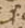
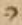
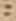
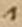
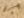
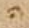
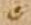
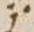
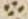
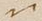

Priscianus: Institutiones (Cod. Guelf. 50 Weiss.)
List of witnesses:
EDITION Prisciani Institutiones grammaticae, ed. M. Hertz
COD_50 Priscianus: Institutiones
List of hands:
scr writer of the main text
gl-1 first glossator, id est Otfrid of
Wissembourg
gl-2 second glossator, probably the same person who also
corrected the main text
sec unclear whether the first or the second glossator was
responsible for the addition
Editorial prinicples:
- as for the text of Priscian, with regard to the text published in Hertz' edition:
change of ci/ti ignored
- change of e/ae/e caudata ignored
- change of i/y ignored (e.g. sillaba/syllaba)
- change of t/tt ignored (e.g. litera/littera; quatuor/quattuor)
- assimilations ignored (e.g. inliterata/illiterata; subposui/supposui)
- abbreviation of et, per, quae, quia, vel, and word endings silently expanded
- differences from Hertz' edition in the use of capital letters for proper names
ignored
Signs for abbreviations:
 - Latin abbreviation for scilicet
 - Latin abbreviation for scilicet
- Latin abbreviation for scilicet
Signs for construe marks:
 - construe mark - two horizontal dots, distigme - (marks words syntactically connected)
- construe mark - two horizontal dots, distigme - (marks words syntactically connected)
 - CONSTRUE MARK DOT WITH RIGHT HALF RING - INSULAR QUOTATION SIGN - (marks the main verb in the sentence)
 - construe mark - two vertical dots, dicolon - (marks words syntactically connected)
 - CONSTRUE MARK CONVERGING STROKES WITH DOT ABOVE - (marks words syntactically connected)
- CONSTRUE MARK CONVERGING STROKES WITH DOT ABOVE - (marks words syntactically connected)
 - CONSTRUE MARK TWO CONVERGING STROKES-DIPLE - (marks words syntactically connected)
Reference signs:
 - REFERENCE SIGN TWO HORIZONTAL DOTS WITH ACUTE
- REFERENCE SIGN TWO HORIZONTAL DOTS WITH ACUTE
 - REFERENCE SIGN INVERTED N WITH DOT BELOW
 - REFERENCE SIGN HALF RING WITH DOT BELOW
 - REFERENCE SIGN CRYPHIA
 - REFERENCE SIGN TWO HORIZONTAL DOTS-DISTIGME
- REFERENCE SIGN TWO HORIZONTAL DOTS-DISTIGME
 - REFERENCE SIGN DOT WITH ACUTE
- REFERENCE SIGN DOT WITH ACUTE
 - REFERENCE SIGN ACUTE FOLLOWED BY DOT
- REFERENCE SIGN ACUTE FOLLOWED BY DOT
 - REFERENCE SIGN TRIGON
- REFERENCE SIGN TRIGON
 - REFERENCE SIGN OBLIQUE BALLON WITH ROPE
- REFERENCE SIGN OBLIQUE BALLON WITH ROPE
 - REFERENCE SIGN OBLIQUE V
- REFERENCE SIGN OBLIQUE V
 - REFERENCE SIGN TWO HORIZONTAL DOTS WITH STROKE BELOW
 - REFERENCE SIGN QUADRIGON
 - REFERENCE SIGN ELONGATED M
 - REFERENCE SIGN OCULUS
- REFERENCE SIGN OCULUS
 - REFERENCE SIGN LEMMA LEMMA 1
- REFERENCE SIGN LEMMA LEMMA 1
 - REFERENCE SIGN LEMMA LEMMA 2
- REFERENCE SIGN LEMMA LEMMA 2
 - REFERENCE SIGN LEMMA LEMMA 3
- REFERENCE SIGN LEMMA LEMMA 3
 - REFERENCE SIGN DOTTED OBELUS
- REFERENCE SIGN DOTTED OBELUS
 - REFERENCE SIGN CURSIVE ZETA
- REFERENCE SIGN CURSIVE ZETA
 - REFERENCE SIGN CROSS
- REFERENCE SIGN CROSS
(VD)
(VS)
(Ir)
(Iv)
(IIr)
(IIv)
(IIIr)
(IIIv)
(IVr)
(IVv)
(1r)
II 1,0 (1r,1) Priscianus Caesariensis grammaticus (1r,2) Iuliano consuli ac patricio
Edition: Caesariensis
Codex 50: om.
Edition: Priscianus...patricio
Codex 50:
II 1,1 (1r,3) cum omnis eloquentiae doctrinam et
omne studiorum genus
Edition: cum
Codex 50: Cum
II 1,2 sapientiae luce (1r,4) 〈praeful〉gens a Graecorum fontibus deriuatum Latinos proprio
II 1,3 sermone inuenio celebrasse et in omni (1r,5) bus illorum uestigia liberalibus
Edition: inuenio
Codex 50: |CONSTRUE MARK DOT WITH RIGHT HALF RING - INSULAR QUOTATION SIGN|
interlinear above
main scribe
construe-marks, i.e. symbols or letters, correlating words belonging
together or establishing word order
Edition: celebrasse
Codex 50: diffamasse
interlinear above
first glossator
Lexical gloss providing a synonym
Edition: et
Codex 50: |construe mark - two vertical dots, dicolon|
interlinear abovemain scribeconstrue-marks, i.e. symbols or letters, correlating words belonging
together or establishing word orderet → uideo (II 1,4)scripta (II 1,4 prolata v.l.)
Edition: in
Codex 50: |Latin abbreviation for scilicet| cum
interlinear above
main scribe
glosses giving variant reading of the main text
Edition: omnibus
Codex 50: |construe mark - two horizontal dots, distigme|
interlinear abovemain scribeconstrue-marks, i.e. symbols or letters, correlating words belonging
together or establishing word orderomnibus → liberalibus (II 1,3)artibus (II 1,4)
propter sententiae
prolixitatem...addidit...
right margin
first glossator
Edition: liberalibus
Codex 50: |construe mark - two horizontal dots, distigme|
interlinear above
main scribe
construe-marks, i.e. symbols or letters, correlating words belonging
together or establishing word order
Edition: liberalibus
Codex 50: nobilibus quia liberi homines
artem discebant uel quia liberos faciunt homines a uitiis
interlinear above
first glossator
Lexical gloss providing a synonym
commentary glosses beginning with quia
II 1,4 consecutos artibus
uideo, nec solum ea, quae emendate ab illis sunt
prolata, (1r,6) sed
Edition: artibus
Codex 50: |construe mark - two horizontal dots, distigme|
interlinear above
main scribe
construe-marks, i.e. symbols or letters, correlating words belonging
together or establishing word order
Edition: uideo
Codex 50: |construe mark - two vertical dots, dicolon|
interlinear above
main scribe
construe-marks, i.e. symbols or letters, correlating words belonging
together or establishing word order
Edition: ea
Codex 50: om.
Edition: prolata
Codex 50: scripta|construe mark - two vertical dots, dicolon|
interlinear above
main scribe
construe-marks, i.e. symbols or letters, correlating words belonging
together or establishing word order
Edition: emendate
Codex 50: |Latin abbreviation for scilicet| bene
interlinear above
first glossator
Lexical gloss providing a synonym
II 1,5 etiam quosdam errores eorum amore grecorum (main scribe) doctorum deceptos imitari, in
quibus
Edition: eorum
Codex 50: gr (grecorum)
interlinear above
main scribe
glosses simplifying the understanding of a sentence by adding words which
Priscian had only implied
Edition: quibus
Codex 50: |REFERENCE SIGN TWO HORIZONTAL DOTS WITH ACUTE|
interlinear above
first glossator
symbol added to link a lemma with its marginal annotation
Edition: quibus
Codex 50: |REFERENCE SIGN TWO HORIZONTAL DOTS WITH ACUTE| inter quas artes
liberales uetustissima grammatica arguitur arte p[3 char illegible]asse
right margin
first glossator
commentary glosses beginning often with id est, providing a paraphrase or
an explanation of the lemma
II 1,6 maxime uetustissi (1r,7) ma
grammatica ars arguitur peccasse, cuius auctores,
Edition: ars
Codex 50: |CONSTRUE MARK CONVERGING STROKES WITH DOT ABOVE|
interlinear abovemain scribeconstrue-marks, i.e. symbols or letters, correlating words belonging
together or establishing word orderars → cuius (II 1,6)
Edition: peccasse
Codex 50: |Latin abbreviation for scilicet| eos
doctores
interlinear above
first glossator
commentary glosses beginning often with id est, providing a paraphrase or
an explanation of the lemma
Edition: cuius
Codex 50: |CONSTRUE MARK CONVERGING STROKES WITH DOT ABOVE|
interlinear above
main scribe
construe-marks, i.e. symbols or letters, correlating words belonging
together or establishing word order
II 1,7 quanto sunt iuniores, tanto perspicaciores, et
ingeniis floruisse (1r,8) et
Edition: perspicatiores
Codex 50: perspicax res est quae perspici
potest
interlinear above
first glossator
commentary glosses beginning often with id est, providing a paraphrase or
an explanation of the lemma
Edition: perspicatiores
Codex 50: |CONSTRUE MARK TWO CONVERGING STROKES-DIPLE|
interlinear abovemain scribeconstrue-marks, i.e. symbols or letters, correlating words belonging
together or establishing word orderperspicatiores → floruisse (II 1,7)ualuisse (II 1,8)confirmantur (II 1,8)
Edition: floruisse
Codex 50: |CONSTRUE MARK TWO CONVERGING STROKES-DIPLE|
interlinear above
main scribe
construe-marks, i.e. symbols or letters, correlating words belonging
together or establishing word order
II 1,8 diligentia ualuisse
omnium iudicio confirmantur eruditissimorum (quid
enim
Edition: ualuisse
Codex 50: |CONSTRUE MARK TWO CONVERGING STROKES-DIPLE|
interlinear above
main scribe
construe-marks, i.e. symbols or letters, correlating words belonging
together or establishing word order
Edition: confirmantur
Codex 50: |CONSTRUE MARK TWO CONVERGING STROKES-DIPLE|
interlinear above
main scribe
construe-marks, i.e. symbols or letters, correlating words belonging
together or establishing word order
II 1,9 Herodiani artibus certius, quid (1r,9) Apollonii scrupulosis quaestionibus
Edition: certius
Codex 50: firmius
interlinear above
first glossator
Lexical gloss providing a synonym
Edition: scrupulosis
Codex 50: [6 char illegible]ilioribus
interlinear above
first glossator
Lexical gloss providing a synonym
II 1,10 enucleatius possit inueniri?) cum igitur eos omnia fere uitia, quaecumque
Edition: enucleatius
Codex 50: |REFERENCE SIGN TWO HORIZONTAL DOTS WITH ACUTE|
interlinear above
first glossator
symbol added to link a lemma with its marginal annotation
Edition: enucleatius
Codex 50: |REFERENCE SIGN TWO HORIZONTAL DOTS WITH ACUTE| apertius uel
manifestius
right margin
first glossator
commentary glosses beginning often with id est, providing a paraphrase or
an explanation of the lemma
Edition: cum
Codex 50: quia
interlinear above
main scribe
glosses giving variant reading of the main text
Edition: cum
Codex 50: |CONSTRUE MARK DOT WITH RIGHT HALF RING - INSULAR QUOTATION SIGN|
interlinear abovemain scribeconstrue-marks, i.e. symbols or letters, correlating words belonging
together or establishing word ordercum → igitur (II 1,10)comperio (II 1,12)
Edition: igitur
Codex 50: |CONSTRUE MARK DOT WITH RIGHT HALF RING - INSULAR QUOTATION SIGN|
interlinear above
main scribe
construe-marks, i.e. symbols or letters, correlating words belonging
together or establishing word order
Edition: eos
Codex 50: |construe mark - two horizontal dots, distigme|
interlinear abovemain scribeconstrue-marks, i.e. symbols or letters, correlating words belonging
together or establishing word ordereos → omnia (II 1,10)uitia (II 1,10)artis (II 1,11)grammaticae (II 1,11)expurgasse (II 1,12)
Edition: omnia
Codex 50: |construe mark - two horizontal dots, distigme|
interlinear above
main scribe
construe-marks, i.e. symbols or letters, correlating words belonging
together or establishing word order
Edition: uitia
Codex 50: |construe mark - two horizontal dots, distigme|
interlinear above
main scribe
construe-marks, i.e. symbols or letters, correlating words belonging
together or establishing word order
II 1,11 antiquorum Grae (1r,10) corum
commentariis sunt relicta artisgrammaticae,
Edition: commentariis
Codex 50: |REFERENCE SIGN INVERTED N WITH DOT BELOW|
interlinear above
first glossator
symbol added to link a lemma with its marginal annotation
Edition: commentariis
Codex 50: |REFERENCE SIGN INVERTED N WITH DOT BELOW|
|Latin abbreviation for scilicet| breuibus scriptis
right margin
first glossator
commentary glosses beginning often with id est, providing a paraphrase or
an explanation of the lemma
Edition: artis
Codex 50: |construe mark - two horizontal dots, distigme|
interlinear above
main scribe
construe-marks, i.e. symbols or letters, correlating words belonging
together or establishing word order
Edition: grammaticae
Codex 50: |construe mark - two horizontal dots, distigme|
interlinear above
main scribe
construe-marks, i.e. symbols or letters, correlating words belonging
together or establishing word order
II 1,12 expurgasse
comperio certisque rationis legibus emendasse, (1r,11) nostrorum autem
Edition: expurgasse
Codex 50: emendasse
interlinear above
first glossator
Lexical gloss providing a synonym
Edition: expurgasse
Codex 50: |construe mark - two horizontal dots, distigme|
interlinear above
main scribe
construe-marks, i.e. symbols or letters, correlating words belonging
together or establishing word order
Edition: comperio
Codex 50: |CONSTRUE MARK DOT WITH RIGHT HALF RING - INSULAR QUOTATION SIGN|
interlinear above
main scribe
construe-marks, i.e. symbols or letters, correlating words belonging
together or establishing word order
[12 char illegible]
left margin
first glossator
II 1,13 neminem post illos imitatorem eorum extitisse,
quippe in neglegentiam
Edition: in neglegentiam
Codex 50: in desidiam
interlinear above
first glossator
Lexical gloss providing a synonym
II 2,1 cadentibus studiis literarum (1r,12) propter
inopiam scriptorum, quamuis audacter,
Edition: inopiam
Codex 50: pigritiam
interlinear above
first glossator
Lexical gloss providing a synonym
II 2,2 sed non impudenter, ut puto, conatus sum pro
uiribus rem
arduam
Edition: impudenter
Codex 50: inpudenter
Edition: impudenter
Codex 50: |REFERENCE SIGN HALF RING WITH DOT BELOW|
interlinear above
first glossator
symbol added to link a lemma with its marginal annotation
Edition: impudenter
Codex 50: |REFERENCE SIGN HALF RING WITH DOT BELOW| inreuerenter uel
inrationabiliter. cum uerecundia et reuerentia
right margin
first glossator
commentary glosses beginning often with id est, providing a paraphrase or
an explanation of the lemma
Edition: impudenter
Codex 50: [2 char illegible]denter
interlinear above
first glossator
Lexical gloss providing a synonym
Edition: ut
Codex 50: |construe mark - two horizontal dots, distigme|
interlinear abovemain scribeconstrue-marks, i.e. symbols or letters, correlating words belonging
together or establishing word orderut → rem (II 2,2)arduam (II 2,2)
Edition: puto
Codex 50: estimo
interlinear above
first glossator
Lexical gloss providing a synonym
Edition: conatus sum
Codex 50: coepi
interlinear above
first glossator
Lexical gloss providing a synonym
Edition: rem
Codex 50: |construe mark - two horizontal dots, distigme|
interlinear above
main scribe
construe-marks, i.e. symbols or letters, correlating words belonging
together or establishing word order
Edition: arduam
Codex 50: |construe mark - two horizontal dots, distigme|
interlinear above
main scribe
construe-marks, i.e. symbols or letters, correlating words belonging
together or establishing word order
II 2,3 quidem, sed officio professionis non indebitam,
supra nominatorum praecepta
Edition: professionis
Codex 50: uoluntatis. uel quia grammaticus
uocor
interlinear above
first glossator
Lexical gloss providing a synonym
commentary glosses beginning with quia
II 2,4 uirorum, quae congrua sunt (1r,14) uisa, in
Latinum transferre sermonem, collectis
II 2,5 etiam omnibus fere, quaecumque necessaria
nostrorum quoque inueniuntur (1r,15)
II 2,6 artium commentariis grammaticorum, quod gratum
fore credidi
Edition: commentariis
Codex 50: breuibus
scriptis
interlinear above
first glossator
commentary glosses beginning often with id est, providing a paraphrase or
an explanation of the lemma
II 2,7 temperamentum, si ex utriusque linguae modera (1r,16) toribus elegantiora in unum
Edition: moderatoribus
Codex 50: |REFERENCE SIGN CRYPHIA|
interlinear above
first glossator
symbol added to link a lemma with its marginal annotation
Edition: moderatoribus
Codex 50: |REFERENCE SIGN CRYPHIA|mode..am..
right margin
first glossator
commentary glosses beginning often with id est, providing a paraphrase or
an explanation of the lemma
Edition: elegantiora
Codex 50: eligantiora
Edition: elegantiora
Codex 50: pulchriora
interlinear above
first glossator
Lexical gloss providing a synonym
II 2,8 coeant corpus meo labore faciente, quia nec
uituperandum me esse credo, si
Edition: coeant
Codex 50: conueniant
interlinear above
first glossator
Lexical gloss providing a synonym
II 2,9 eos imitor, (1r,17) qui principatum inter
scriptores Graios artis grammaticae
II 2,10 possident, cum ueteres nostri in erroribus
etiam, ut dic (1r,18) tum est, Graecos
II 2,11 aequiperantes maximam tamen laudem sunt
consecuti.
Edition: aequiperantes
Codex 50: equipperantes
Edition: equipperantes
Codex 50: |REFERENCE SIGN TWO HORIZONTAL DOTS-DISTIGME|
interlinear above
first glossator
symbol added to link a lemma with its marginal annotation
Edition: equipperantes
Codex 50: |REFERENCE SIGN TWO HORIZONTAL DOTS-DISTIGME| .s..si
left margin
first glossator
commentary glosses beginning often with id est, providing a paraphrase or
an explanation of the lemma
Edition: laudem sunt
Codex 50: sunt laudem
II 2,12 exemplum etiam proponere placuit, ne pi (1r,19) geat alios etiam a me uel
II 2,13 ignorantia forte praetermissa uel uitiose dicta
(nihil enim ex omni parte
II 2,14 perfectum in huma (1r,20) nis
inuentionibus esse posse credo) sua quoque
Edition: inuentionibus esse posse credo) sua
Codex 50: credo esse inuentionibus sua posse
Edition: sua
Codex 50: |REFERENCE SIGN DOT WITH ACUTE|
above left
first glossator
symbol added to link a lemma with its marginal annotation
Edition: sua
Codex 50: |REFERENCE SIGN DOT WITH ACUTE|
above right
first glossator
symbol added to link a lemma with its marginal annotation
Edition: sua
Codex 50: |REFERENCE SIGN DOT WITH ACUTE| sua industria
right margin
first glossator
Glosses on syntax, elucidating the construction of a sentence
II 2,15 industria ad communem literatoriae professionis
utilitatem congrua ratio (1r,21) nis
II 2,16 proportione uel addere uel mutare tractantes.
namque festinantius quam
Edition: proportione
Codex 50: |REFERENCE SIGN TWO HORIZONTAL DOTS-DISTIGME| collatione uel
comparatione
interlinear above
first glossator
commentary glosses beginning often with id est, providing a paraphrase or
an explanation of the lemma
II 2,17 uolui hos edere me libros compule (1r,22) runt, qui alienis laboribus insidiantes
Edition: edere
Codex 50: statuere
interlinear above
first glossator
Lexical gloss providing a synonym
II 2,18 furtimque et quasi per latrocinia scripta aliis
subripientes unius nominis ad (1r,23)
II 2,19 titulum pertinentis infanda mutatione totius
operis in se gloriam transferre
Edition: infanda
Codex 50: inlicita
interlinear above
first glossator
Lexical gloss providing a synonym
MS Köln 200 contains the
same gloss.
II 2,20 conantur. sed quoniam in tanta operis (1r,24) materia impossibile est aliquid
Edition: impossibile
Codex 50: inpossibile
II 2,21 perfectum breuiter exponi, spatii quoque ueniam
peto, quamuis ad
Edition: perfectum breuiter
Codex 50: breuiter perfectum
Edition: spatii
Codex 50: |Latin abbreviation for scilicet| magnitudinis
interlinear above
first glossator
Lexical gloss providing a synonym
II 2,22 Herodiani scriptorum (1r,25) pelagus et ad
eius patris Apollonii spatiosa uolumina
Edition: patris
Codex 50: paris
II 2,23 meorum compendiosa sunt existimanda scripta
librorum.
II 2,24 huius (1r,26) tamen operis te hortatorem
sortitus iudicem quoque facio,
II 2,25 Iuliane consul ac patricie, cui summos
dignitatis gra (1r,27) dus summa
Edition: consul ac patricie
Codex 50: ...quo patris
right margin
first glossator
commentary glosses beginning often with id est, providing a paraphrase or
an explanation of the lemma
Edition: patricie
Codex 50: patricie
II 2,26 adquisiuit in omni studio ingenii claritudo, non
tantum accipiens ab excelsis
II 2,27 gradibus honorum (1r,28) pretii, quantum
illis decoris addens tui, cuius mentem
II 2,28 tam Homeri credo quam Virgilii anima constare,
quo (1r,29) rum uterque
II 2,29 arcem possederat musicae, te tertium ex utroque
compositum esse
Edition: arcem
Codex 50: artem
Codex 50: artem
Codex 50: |REFERENCE SIGN ACUTE FOLLOWED BY DOT|
interlinear above
second glossator
symbol added to link a lemma with its marginal annotation
Codex 50: artem
Codex 50:
|REFERENCE SIGN ACUTE FOLLOWED BY DOT| uel arcem
right margin
second glossator
glosses giving variant reading of the main text
Edition: possederat
Codex 50: possei
interlinear above
derat
Edition: esse
Codex 50: esse ego
II 2,30 confirmans, quippe non minus (1r,30)
Graecorum quam Latinorum in omni doctrinae
II 2,31 genere praefulgentem. tibi ergo hoc opus
deuoueo, omnis (1r,31) eloquentiae
Edition: genere
Codex 50: gloriae
inline
main scribe
Edition: deuoueo
Codex 50: commendo. uel promitto
interlinear above
first glossator
Lexical gloss providing a synonym
II 3,1 praesul, ut quantamcumque mihi deus annuerit
suscepti laboris gloriam,
Edition: quantamcumque
Codex 50: |REFERENCE SIGN TRIGON|
interlinear above
second glossator
symbol added to link a lemma with its marginal annotation
Edition: gloriam
Codex 50: |REFERENCE SIGN TRIGON|
interlinear above
second glossator
symbol added to link a lemma with its marginal annotation
Edition: quantamcumque
Codex 50: |REFERENCE SIGN TRIGON| uel quantum
gloriae...
right margin
second glossator
glosses giving variant reading of the main text
Edition: gloriam
Codex 50: |REFERENCE SIGN TRIGON| uel quantum
gloriae...
right margin
second glossator
glosses giving variant reading of the main text
Edition: gloriam
Codex 50: per diffinitionem
interlinear above
first glossator
commentary glosses beginning often with id est, providing a paraphrase or
an explanation of the lemma
Otfrid wrote this gloss
AFTER the second glossator had added the reference sign and the marginal gloss
concerning "gloriam". Sometimes, however (see below), the second glossator clearly
wrote after Otfrid. Thus, the two writers added their glosses and worked with this
manuscript almost at the same time
II 3,2 te comite quasi sole quodam dilu (1r,32) cidius crescat.
II 3,3 titulos etiam uniuersi operis per singulos
supposui libros, quo
II 3,4 facilius, quicquid ex his quaeratur, dis (1r,33) cretis possit locis inueniri.
Edition: inueniri
Codex 50: inuenirei
interlinear above
II 3,5 primus liber continet de uoce et eius speciebus;
de litera: quid sit
Edition: primus
Codex 50: Primus
II 3,6 litera, de eius generibus (1r,34) et
speciebus, de singularum potestate, quae in
II 3,7 quas transeunt per declinationes uel
compositiones partium orationis.
II 3,8 secundus (1r,35) de syllaba: quid sit
syllaba, quot literis constare potest et
Edition: secundus
Codex 50: om.
II 3,9 quo ordine et quo sono, de accidentibus singulis
syllabis;
(1v)
(1r,1) de
dictione: quid
Edition: accidentibus
Codex 50: accei
interlinear above
dentibus
II 3,10 sit dictio, quae eius differentia ad syllabam;
de oratione: quid sit oratio,
Edition: eius
Codex 50: eiu
interlinear above
s
II 3,11 quot eius partes, de earum proprietate; de
nomine: (1r,2) quid sit nomen, de
II 3,12 accidentibus ei, quot sunt species propriorum
nominum, quot
II 3,13 appellatiuorum, quot adiectiuorum, quot
deriuatiuorum; de patro (1r,3) nymicis: quot eorum
Edition: appellatiuorum
Codex 50: apellatiuorum
Edition: deriuatiuorum
Codex 50: diriuatiuorum
Edition: patronymicis
Codex 50: patronomicis
II 3,14 formae, quomodo deriuantur, ex quibus
primitiuis; de diuersis
Edition: deriuantur
Codex 50: diriuantur
II 3,15 possessiuorum terminationibus et eorum
regulis.
II 3,16 tertius de com (1r,4) paratiuis et
superlatiuis et eorum diuersis extremitatibus:
Edition: tertius
Codex 50: III
II 3,17 ex quibus positiuis et qua ratione formantur; de
diminutiuis: quot eorum
II 3,18 species, ex quibus (1r,5) declinationibus
nominum, quomodo formantur.
II 3,19 quartus de denominatiuis et uerbalibus et
participialibus et
Edition: quartus
Codex 50: IIII
II 3,20 aduerbialibus: quot eorum species, (1r,6) ex
quibus primitiuis, quomodo nascuntur.
II 3,21 quintus de generibus dinoscendis per singulas
terminationes; de
Edition: quintus
Codex 50: V
II 3,22 numeris; de figuris et earum compage; de
casu. (1r,7)
II 3,23 sextus de nominatiuo casu per singulas
extremitates omnium
Edition: sextus
Codex 50: VI
II 3,24 nominum, tam in uocales quam in consonantes
desinentium, per ordinem; de
II 3,25 genetiuorum (1r,8) tam ultimis quam
paenultimis syllabis.
II 3,26 septimus de ceteris obliquis casibus, tam
singularibus quam pluralibus.
Edition: septimus
Codex 50: VII
II 4,1 octauus de uerbo et eius accidentibus. (1r,9)
Edition: octauus
Codex 50: VIII
Edition: eius
Codex 50: de eius
II 4,2 nonus de regulis generalibus omnium
coniugationum.
Edition: nonus
Codex 50: VIIII
II 4,3 decimus de praeterito perfecto.
Edition: decimus
Codex 50: X
II 4,4 undecimus de participio.
Edition: undecimus
Codex 50: XI
II 4,5 duodecimus et tertiusdecimus de pronomine. (1r,10)
II 4,6 quartusdecimus de praepositione.
Edition: quartusdecimus
Codex 50: XIIII
II 4,7 quintusdecimus de aduerbio et
interiectione.
Edition: quintusdecimus
Codex 50: XV
II 4,8 sextusdecimus de coniunctione.
Edition: sextusdecimus
Codex 50: XVI
II 4,9 septimusdecimus et octauusdecimus de
constructione siue (1r,11) ordinatione
II 4,10 partium orationis inter se.
II 5,0 INCIPIT ARS PRISCIANI GRAMMATICI
CESARIENSIS (main scribe) liber primus de uoce
Edition: liber primus
Codex 50: om.
Edition: de uoce
Codex 50: DE VOCE
Edition: de uoce
Codex 50: Vox est
interlinear-one-line-above
second glossator
commentary glosses
II 5,1 (1r,12) philosophi definiunt, uocem esse
aerem tenuissimum ictum uel suum
Edition: philosophi
Codex 50: Philosophi
Edition: philosophi
Codex 50: |REFERENCE SIGN INVERTED N WITH DOT BELOW|
interlinear above
first glossator
symbol added to link a lemma with its marginal annotation
Edition: philosophi
Codex 50: |REFERENCE SIGN OBLIQUE BALLON WITH ROPE|
interlinear above
second glossator
symbol added to link a lemma with its marginal annotation
Edition: philosophi
Codex 50: |REFERENCE SIGN INVERTED N WITH DOT BELOW| amatores scientiae definio. uniuscuiusque rei proprietas
left margin
first glossator
commentary glosses beginning often with id est, providing a paraphrase or
an explanation of the lemma
Edition: philosophi
Codex 50: |REFERENCE SIGN OBLIQUE BALLON WITH ROPE| leniter insinuat se unum esse e philosophis
left margin
second glossator
glosses commenting on the content of Priscian's work
Edition: definiunt
Codex 50: scribunt. breuiter exponunt.
interlinear above
second glossator
Lexical gloss providing a synonym
Edition: uocem
Codex 50: |REFERENCE SIGN OBLIQUE V|
interlinear above
second glossator
symbol added to link a lemma with its marginal annotation
Edition: uocem
Codex 50: |REFERENCE SIGN OBLIQUE V|
lûtnussa
interlinear above
second glossator
Lexical gloss providing a translation of the lemma into
Old-High-German
Edition: tenuissimum
Codex 50: subtilissimum
interlinear above
second glossator
Lexical gloss providing a synonym
Edition: ictum
Codex 50: percussum. pulsatum
interlinear above
second glossator
Lexical gloss providing a synonym
Edition: ictum
Codex 50: |REFERENCE SIGN TWO HORIZONTAL DOTS WITH STROKE BELOW|
interlinear above
second glossator
symbol added to link a lemma with its marginal annotation
Edition: ictum
Codex 50: |REFERENCE SIGN TWO HORIZONTAL DOTS WITH STROKE BELOW| sensus est
talis. siue percuciatur aer nullo audiente seu sonus aliquis aures
tangat.
interlinear-one-line-above
second glossator
commentary glosses beginning often with id est, providing a paraphrase or
an explanation of the lemma
Edition: suum
Codex 50: |Latin abbreviation for scilicet| proprium
interlinear above
first glossator
Lexical gloss providing a synonym
II 5,2 sensibile aurium, id est quod proprie auribus
ac (1r,13) cidit. et est prior definitio
Edition: sensibile
Codex 50: sensum
interlinear above
second glossator
Lexical gloss providing a synonym
Edition: id est quod proprie auribus accidit
Codex 50: Vox
est proprius sensus aurium. sicut uisus oculorum et reliqua
interlinear above
second glossator
commentary glosses
commentary glosses beginning often with id est, providing a paraphrase or
an explanation of the lemma
Edition: id est quod proprie auribus accidit
Codex 50:
|Latin abbreviation for scilicet| quia accidit auribus uocem audire
interlinear below
second glossator
commentary glosses beginning often with id est, providing a paraphrase or
an explanation of the lemma
Edition: accidit
Codex 50: |Latin abbreviation for scilicet| ut sentiant
uocem
interlinear above
second glossator
commentary glosses beginning often with id est, providing a paraphrase or
an explanation of the lemma
Edition: prior definitio
Codex 50: AVG (Augustinus) substantia uocis est aer tenuissimus
interlinear above
second glossator
commentary glosses beginning often with id est
II 5,3 a substantia sumpta, altera uero a notione, quam
Graeci
ENNOIAN
ἔννοιαν
dicunt,
Edition: a substantia
Codex 50: |REFERENCE SIGN QUADRIGON|
interlinear above
second glossator
symbol added to link a lemma with its marginal annotation
Edition: a substantia
Codex 50: |REFERENCE SIGN QUADRIGON||Latin abbreviation for scilicet| ab ictu aeris.
left margin
second glossator
commentary glosses beginning often with id est, providing a paraphrase or
an explanation of the lemma
Edition: a notione
Codex 50: |Latin abbreviation for scilicet| a cognitione |Latin abbreviation for scilicet| ab auditu icti aeris.
interlinear above
second glossator
Lexical gloss providing a synonym
commentary glosses beginning often with id est, providing a paraphrase or
an explanation of the lemma
II 5,4 hoc est ab accidentibus. (1r,14) accidit enim uoci auditus, quantum in ipsa
est.
Edition: enim
Codex 50: |REFERENCE SIGN LEMMA LEMMA 2|
interlinear above
second glossator
symbol added to link a lemma with a further lemma in order to highlight
their connection within Priscian's text. The two lemmata are not part of the
same sentence. Their connection regards the content, not the syntax.
Edition: uoci
Codex 50: |Latin abbreviation for scilicet| potest uox
audiri
interlinear above
first glossator
commentary glosses beginning often with id est, providing a paraphrase or
an explanation of the lemma
Edition: quantum
Codex 50: |REFERENCE SIGN ELONGATED M|
interlinear above
first glossator
symbol added to link a lemma with its marginal annotation
Edition: quantum
Codex 50: |REFERENCE SIGN ELONGATED M||Latin abbreviation for scilicet| secundum quantitatem
uocis. si magna fit aut parua. nam alia VOX plus alia minus
sonat.
left margin
second glossator
commentary glosses beginning often with id est, providing a paraphrase or
an explanation of the lemma
Edition: ipsa
Codex 50: uoce
interlinear above
first glossator
syntactical glosses adding words omitted by Priscian
II 5,5 uocis autem differentiae sunt quattuor: articulata, inarticulata,
literata, (1r,15)
Edition: differentiae
Codex 50: |REFERENCE SIGN LEMMA LEMMA 1|
interlinear above
second glossator
symbol added to link a lemma with a further lemma in order to highlight
their connection within Priscian's text. The two lemmata are not part of the
same sentence. Their connection regards the content, not the syntax.
II 5,6 illiterata. articulata est, quae coartata, hoc
est copulata cum aliquo sensu
Edition: articulata
Codex 50: Intelectualis |Latin abbreviation for scilicet| quę intellegi potest
interlinear above
second glossator
Lexical gloss providing a synonym
commentary glosses beginning often with id est, providing a paraphrase or
an explanation of the lemma
Edition: copulata
Codex 50: |Latin abbreviation for scilicet| cum sensu mentis.
Idem
interlinear above
second glossator
syntactical glosses adding words omitted by Priscian
II 5,7 mentis eius, qui loquitur, profertur.
inarticulata (1r,16) est contraria, quae a nullo
Edition: inarticulata
Codex 50: Inarticulata
Edition: inarticulata
Codex 50: In qua nihil intelligi potest
interlinear above
second glossator
commentary glosses beginning often with id est, providing a paraphrase or
an explanation of the lemma
Edition: contraria
Codex 50: |Latin abbreviation for scilicet|articulatę
interlinear above
second glossator
syntactical glosses adding words omitted by Priscian
II 5,8 affectu proficiscitur mentis. literata est, quae
scribi potest, illiterata, quae
Edition: affectu
Codex 50: |Latin abbreviation for scilicet| sensu
interlinear above
second glossator
Lexical gloss providing a synonym
II 5,9 scribi non potest. inue (1r,17) niuntur igitur quaedam uoces articulatae, quae
Edition: inueniuntur
Codex 50: Articulata et literata
interlinear above
second glossator
commentary glosses beginning often with id est, providing a paraphrase or
an explanation of the lemma
II 5,10 possunt scribi et intellegi, ut:
II 5,11 «arma uirumque cano»,
II 5,12 quaedam, quae non possunt scribi, (1r,18)
intelleguntur tamen, ut sibili hominum
Edition: quaedam
Codex 50: articulata et
inliterata
interlinear above
second glossator
commentary glosses beginning often with id est, providing a paraphrase or
an explanation of the lemma
II 5,13 et gemitus: hae enim uoces, quamuis sensum aliquem significent
proferentis
Edition: enim
Codex 50: |REFERENCE SIGN LEMMA LEMMA 2|
interlinear above
second glossator
symbol added to link a lemma with a further lemma in order to highlight
their connection within Priscian's text. The two lemmata are not part of the
same sentence. Their connection regards the content, not the syntax.
Edition: sensum
Codex 50: sibilus ad aliquid significandum
agitur
interlinear above
second glossator
commentary glosses beginning often with id est, providing a paraphrase or
an explanation of the lemma
II 5,14 eas, scribi tamen non possunt. (1r,19) aliae
autem sunt, quae, quamuis scribantur,
Edition: aliae
Codex 50: inarticulata et
literata
left margin
second glossator
commentary glosses beginning often with id est, providing a paraphrase or
an explanation of the lemma
II 5,15 tamen inarticulatae dicuntur, cum nihil
significent, ut coax, cra. Eas enim uoces quanquam Intellegimus
de quo sint uolucre profectę, tamen inarticulatae dicuntur, quia uox ut
superius Inarticulata est quę a nullo affectu proficiscitur. (main scribe)
aliae
The addition is recorded in the apparatus of
Hertz' edition, p. II, 5. MS St. Gallen 904 shares this same reading. MS Köln 200
features the addition in the margin. MS Karlsruhe, BLB, Aug. perg. 132 features
the addition on a schedula (f. 3r) along with the comment: "sed in libro romano
non habetur". On this see Cinato 2015, pp.
527-529.
Edition: coax
Codex 50: Vox ranum.
interlinear above
second glossator
commentary glosses beginning often with id est, providing a paraphrase or
an explanation of the lemma
Edition: cra
Codex 50: Vox coruorum.
interlinear above
second glossator
commentary glosses beginning often with id est, providing a paraphrase or
an explanation of the lemma
Codex 50: affectu
Codex 50: |REFERENCE SIGN OBLIQUE V|
interlinear above
second glossator
symbol added to link a lemma with its marginal annotation
Codex 50: affectu
Codex 50: |REFERENCE SIGN OBLIQUE V|
|Latin abbreviation for scilicet| a sensu
right margin
second glossator
commentary glosses beginning often with id est, providing a paraphrase or
an explanation of the lemma
Edition: aliae
Codex 50: inarticulata et
inliterata
left margin
second glossator
commentary glosses beginning often with id est, providing a paraphrase or
an explanation of the lemma
II 6,1 uero sunt inarticulatae et illiteratae, quae nec
scribi possunt nec intellegi,
II 6,2 ut crepitus, mugitus et similia. scire autem
debemus, (1r,22) quod has quattuor
Codex 50: scire
Codex 50: |REFERENCE SIGN DOTTED OBELUS|
interlinear above
second glossator
symbol added to link a lemma with its marginal annotation
Edition: scire
Codex 50: |REFERENCE SIGN DOTTED OBELUS| Explanatio superioris sententiae
right margin
second glossator
commentary glosses beginning often with id est, providing a paraphrase or
an explanation of the lemma
II 6,3 species uocum perficiunt quattuor superiores differentiae generaliter uoci
Edition: species
Codex 50: |Latin abbreviation for scilicet| specialitates
interlinear above
second glossator
Lexical gloss providing a synonym
Edition: differentiae
Codex 50: |REFERENCE SIGN LEMMA LEMMA 1|
interlinear above
second glossator
symbol added to link a lemma with a further lemma in order to highlight
their connection within Priscian's text. The two lemmata are not part of the
same sentence. Their connection regards the content, not the syntax.
II 6,4 accidentes, binae per singulas inuicem
coeuntes. (1r,23) uox autem dicta est uel
Edition: accidentes
Codex 50: accei
interlinear above
dentes
Edition: accidentes
Codex 50: |REFERENCE SIGN CURSIVE ZETA|
interlinear above
second glossator
symbol added to link a lemma with its marginal annotation
Edition: accidentes
Codex 50: |REFERENCE SIGN CURSIVE ZETA| Articulata· et literata· Vt arma·
Articulata· et inliterata· Vt sibili hominum· Inarticulata· et literata· Vt
coax· Inarticulata· et inliterata· Vt crepitus;
interlinear one line above
second glossator
commentary glosses
Edition: binae
Codex 50: differentię
interlinear above
first glossator
syntactical glosses adding words omitted by Priscian
Edition: singulas
Codex 50: . Inferiores species uocum.
interlinear above
second glossator
syntactical glosses adding words omitted by Priscian
Edition: uox
Codex 50: Vox
II 6,5 a uocando, ut dux a ducendo, uel ἀπὸ τοῦ βοῶ, ut
quibusdam placet.
Edition: uocando
Codex 50: |Latin abbreviation for scilicet| a sonando quia
Vox sonus dicitur.
interlinear above
second glossator
commentary glosses beginning often with id est, providing a paraphrase or
an explanation of the lemma
Edition: ἀπὸ τοῦ βοῶ
Codex 50: AΠOTo
YBO
above
main scribeƜ
Edition: ἀπὸ τοῦ βοῶ
Codex 50: |Latin abbreviation for scilicet| ab hoc sono
interlinear above
second glossator
Lexical gloss explaining Greek words or translating them into
Latin
Edition: ἀπὸ τοῦ βοῶ
Codex 50: APOTOY |Latin abbreviation for scilicet| ab· BOƜ |Latin abbreviation for scilicet|
sono·et a boo·boatus·dicitur
left margin
first glossator
Lexical gloss explaining Greek words or translating them into
Latin
II 6,6 de litera
Edition: de litera
Codex 50: DE LITERA
II 6,7 litera est pars mini (1r,24) ma uocis compositae, hoc est
uox (main scribe) quae constat
Edition: litera
Codex 50: Littera
Edition: litera
Codex 50: |REFERENCE SIGN LEMMA LEMMA 3|
above
second glossator
symbol added to link a lemma with a further lemma in order to highlight
their connection within Priscian's text. The two lemmata are not part of the
same sentence. Their connection regards the content, not the syntax.
Edition: litera
Codex 50: Non dicit litera
aliarum rerum minimam esse partem nisi tantum litera ... uocis.
interlinear above and right margin
second glossator
commentary glosses beginning often with id est, providing a paraphrase or
an explanation of the lemma
Edition: uocis compositae
Codex 50: |Latin abbreviation for scilicet| syllabę et
dictionis
above
second glossator
commentary glosses beginning often with id est, providing a paraphrase or
an explanation of the lemma
Edition: compositae
Codex 50: |REFERENCE SIGN TWO HORIZONTAL DOTS-DISTIGME|
above
first glossator
symbol added to link a lemma with its marginal annotation
Edition: compositae
Codex 50: |REFERENCE SIGN TWO HORIZONTAL DOTS-DISTIGME|
|Latin abbreviation for scilicet| litteris comprehensę
left margin
first glossator
commentary glosses beginning often with id est, providing a paraphrase or
an explanation of the lemma
II 6,8 compositione literarum, minima autem, quantum ad totam
comprehensionem
Edition: compositione literarum
Codex 50: Vt sunt syllabae et
dictiones
interlinear above
second glossator
commentary glosses beginning often with id est, providing a paraphrase or
an explanation of the lemma
Edition: minima
Codex 50: |Latin abbreviation for scilicet| est
interlinear above
second glossator
syntactical glosses adding words omitted by Priscian
Edition: minima
Codex 50: Duobus modis
minima pars dicitur· uel syllabae uel dictionis minima
pars est uel quia uel dictio diuidi potest litera autem diuid i non potest·
interlinear above and right margin
second glossator
commentary glosses beginning often with id est, providing a paraphrase or
an explanation of the lemma
Edition: quantum
Codex 50: |REFERENCE SIGN LEMMA LEMMA 3|
above
second glossator
symbol added to link a lemma with a further lemma in order to highlight
their connection within Priscian's text. The two lemmata are not part of the
same sentence. Their connection regards the content, not the syntax.
Edition: quantum
Codex 50: |Latin abbreviation for scilicet| pertinet·
interlinear above
second glossator
syntactical glosses adding words omitted by Priscian
Edition: ad totam
Codex 50: |REFERENCE SIGN CROSS|
above
second glossator
symbol added to link a lemma with its marginal annotation
Edition: ad totam
Codex 50: || quasi dicat· Ego discerno ut omnes litterae·
longe quoque uocales ad hanc comprehensionem pertineant.
upper margin of the leaf
second glossator
commentary glosses beginning often with id est, providing a paraphrase or
an explanation of the lemma
II 6,9 uocis (1r,25) literatae (ad hanc enim etiam
productae uocales breuissimae
Edition: literatae
Codex 50: cum literis compositae·
interlinear above
second glossator
commentary glosses beginning often with id est, providing a paraphrase or
an explanation of the lemma
Edition: uocales
Codex 50: |REFERENCE SIGN OCULUS|
above
first glossator
symbol added to link a lemma with its marginal annotation
Edition: uocales
Codex 50: |REFERENCE SIGN OCULUS|quia quando per se
stant partem faciunt siue quia per se nominantur quod aliae litterę non
faciunt
left margin
first glossator
commentary glosses beginning with quia
II 6,10 partes inueniuntur) uel quod omnium est
breuissimum eorum, (1r,26) quae diuidi
II 6,11 possunt, id quod diuidi non potest. possumus et
sic definire: litera est uox,
II 6,12 quae scribi potest indiuidua.
II 6,13 dicitur autem lit (1r,27) era uel
quasi legitera, quod legendi iter praebeat,
Edition: litera
Codex 50: ||
above
first glossator
symbol added to link a lemma with its marginal annotation
Edition: litera
Codex 50: ||a
leitera· a lego et itere uel lituris dilenne liniuntur enim cum
cera tabulę. fricando enim deletur tabula
left margin
first glossator
commentary glosses explaining the etymology of the lemma
commentary glosses beginning often with id est, providing a paraphrase or
an explanation of the lemma
Lexical gloss providing a translation of the lemma into
Old-High-German
for the OHG word dilenne
see Gerhard Köbler, Lateinisch-althochdeutsches Wörterbuch, Göttingen 1971, s.v.
delere = (ar)dilen, p. 51
II 6,14 uel a lituris, ut quibusdam placet, quod
plerumque in ceratis tabulis
Edition: a lituris
Codex 50: |Latin abbreviation for scilicet| a deletionibus
above
first glossator
Lexical gloss providing a synonym
Edition: in
Codex 50: antiqui in
II 6,15 antiqui scri (1r,28) bere solebant
litteris (main scribe). literas autem etiam
elementorum uocabulo
Edition: antiqui
Codex 50: om.
II 6,16 nuncupauerunt ad similitudinem mundi
elementorum: sicut enim illa coeun (1r,29) tia omne
Edition: elementorum
Codex 50: .elementum dicitur uniuersitatis
materia.
above
first glossator
commentary glosses beginning often with id est, providing a paraphrase or
an explanation of the lemma
(2r)
(2v)
(3r)
(3v)
(4r)
(4v)
(5r)
(5v)
(6r)
(6v)
(7r)
(7v)
(8r)
(8v)
(9r)
(9v)
(10r)
(10v)
(11r)
(11v)
(12r)
(12v)
(13r)
(13v)
(14r)
(14v)
(15r)
(15v)
(16r)
(16v)
(17r)
(17v)
(18r)
(18v)
(19r)
(19v)
(20r)
(20v)
(21r)
(21v)
(22r)
(22v)
(23r)
(23v)
(24r)
(24v)
(25r)
(25v)
(26r)
(26v)
(27r)
(27v)
(28r)
(28v)
(29r)
(29v)
(30r)
(30v)
(31r)
(31v)
(32r)
(32v)
(33r)
(33v)
(34r)
(34v)
(35r)
(35v)
(36r)
(36v)
(37r)
(37v)
(38r)
(38v)
(39r)
(39v)
(40r)
(40v)
(41r)
(41v)
(42r)
(42v)
(43r)
(43v)
(44r)
(44v)
(45r)
(45v)
(46r)
(46v)
(47r)
(47v)
(48r)
(48v)
(49r)
(49v)
(50r)
(50v)
(51r)
(51v)
(52r)
(52v)
(53r)
(53v)
(54r)
(54v)
(55r)
(55v)
(56r)
(56v)
(57r)
(57v)
(58r)
(58v)
(59r)
(59v)
(60r)
(60v)
(61r)
(61v)
(62r)
(62v)
(63r)
(63v)
(64r)
(64v)
(65r)
(65v)
(66r)
(66v)
(67r)
(67v)
(68r)
(68v)
(69r)
(69v)
(70r)
(70v)
(71r)
(71v)
(72r)
(72v)
(73r)
(73v)
(74r)
(74v)
(75r)
(75v)
(76r)
(76v)
(77r)
(77v)
(78r)
(78v)
(79r)
(79v)
(80r)
(80v)
(81r)
(81v)
(82r)
(82v)
(83r)
(83v)
(84r)
(84v)
(85r)
(85v)
(86r)
(86v)
(87r)
(87v)
(88r)
(88v)
(89r)
(89v)
(90r)
(90v)
(91r)
(91v)
(92r)
(92v)
(93r)
(93v)
(94r)
(94v)
(95r)
(95v)
(96r)
(96v)
(97r)
(97v)
(98r)
(98v)
(99r)
(99v)
(100r)
(100v)
(101r)
(101v)
(102r)
(102v)
(103r)
(103v)
(104r)
(104v)
(105r)
(105v)
(106r)
(106v)
(107r)
(107v)
(I*r)
(I*v)
(II*r)
(II*v)
(III*r)
(III*v)
(IV*r)
(IV*v)
(V*r)
(V*v)
(HS)
(HD)
(Rücken)
(Oberschnitt)
(Vorderschnitt)
(Unterschnitt)